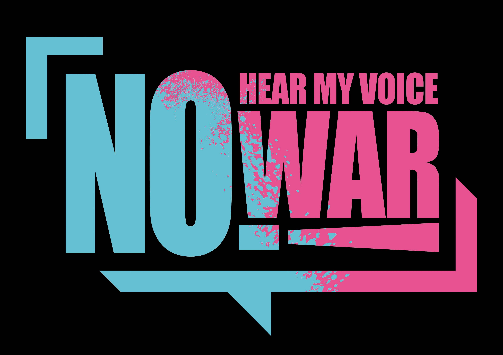
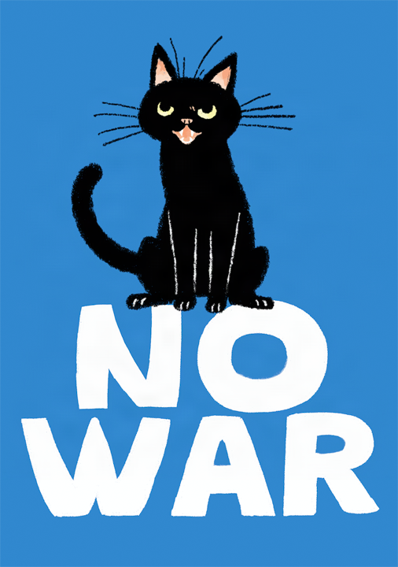
The Power of The People
is Greater than the
People in Power
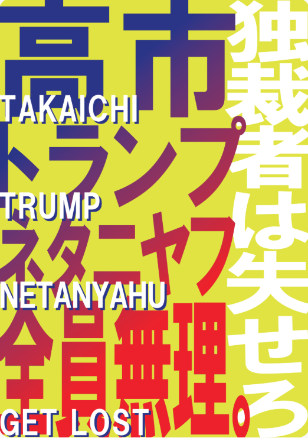
#戦争反対 #改憲反対 #高市やめろ #トランプやめろ
今こそ声を上げよう ― 全国で反戦の輪が広がっています
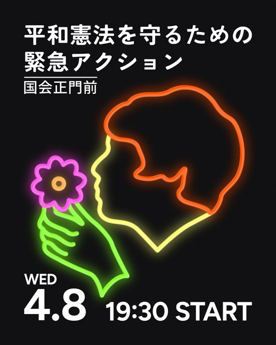
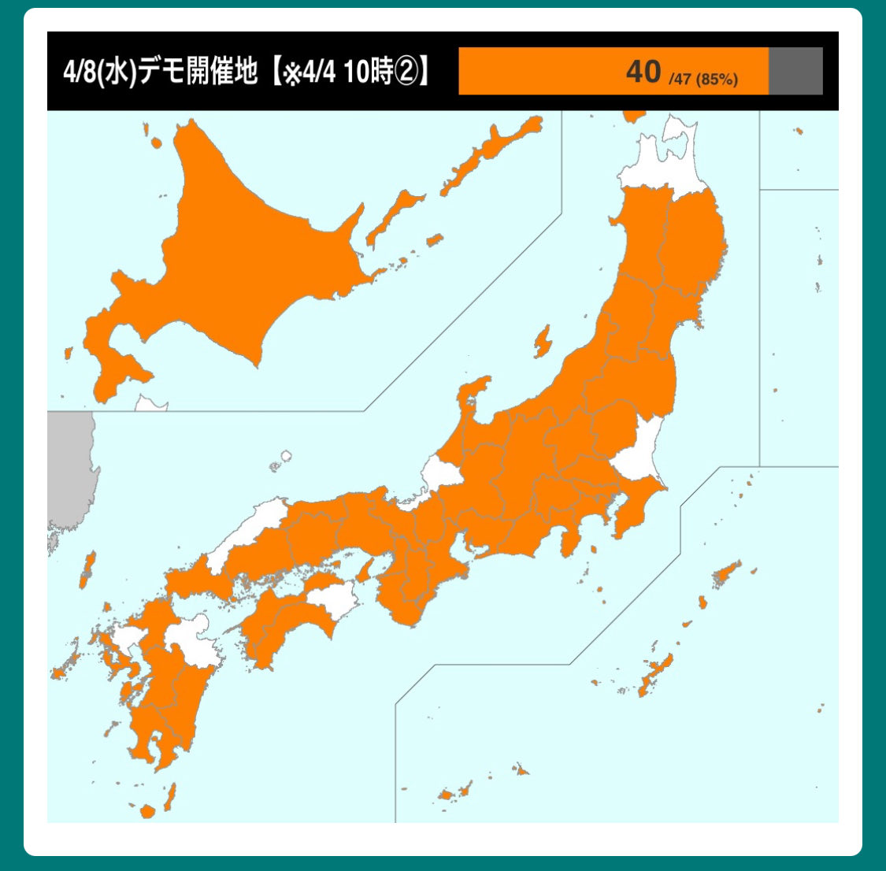
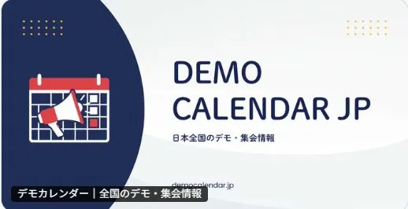
日本国内の反戦デモは、日本のメディアはほとんど報じません。
しかし海外メディアやSNSが拾ってくれています。
日本の右翼勢力と日本国民は別、と見てくれている。
韓国のXユーザーはこう言いました。
「東京の平和憲法守護集会。日本には極右勢力もあるが、自国内では力が少ない。まるで孤独に戦っているよう。日本の平和勢力の声が大きくなるよう助けたい。そうすれば東アジアに平和が定着できる。」
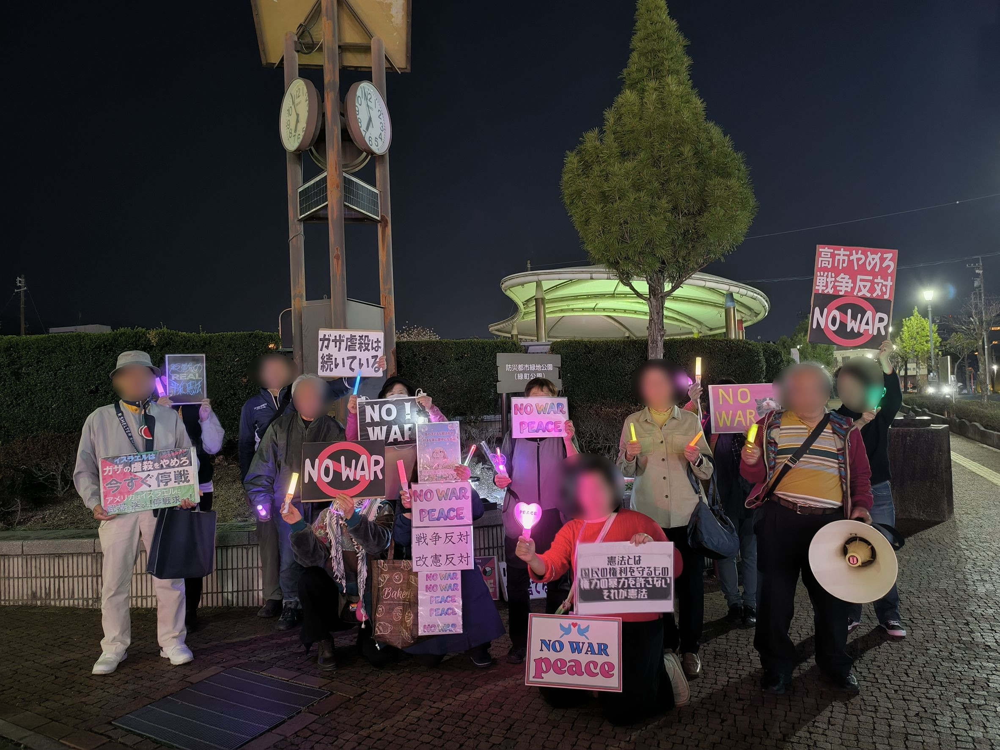
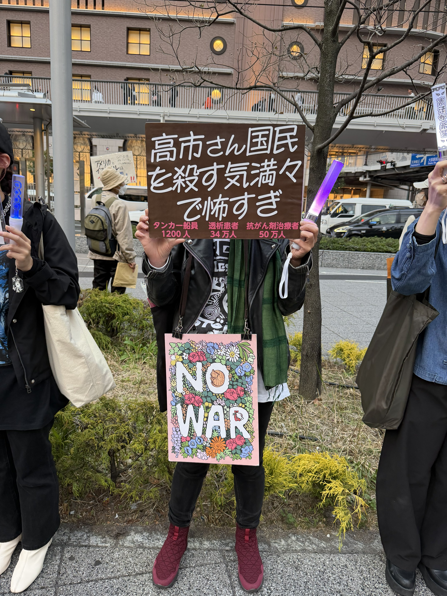
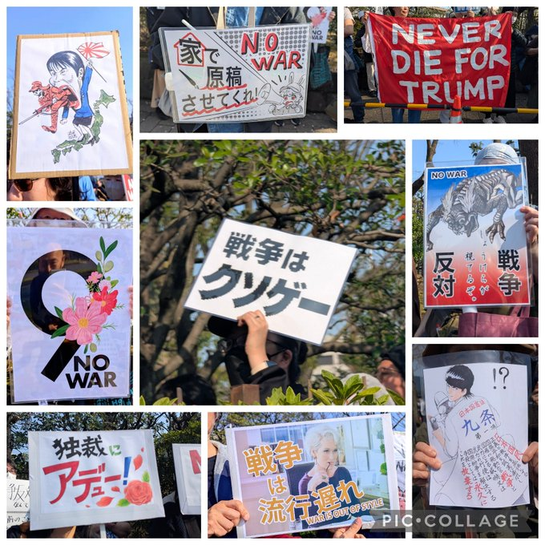
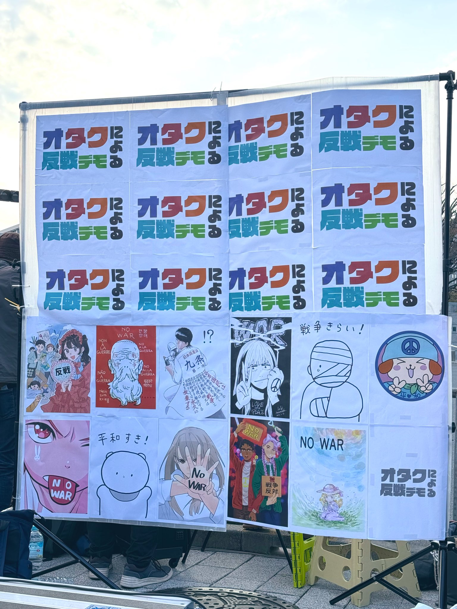
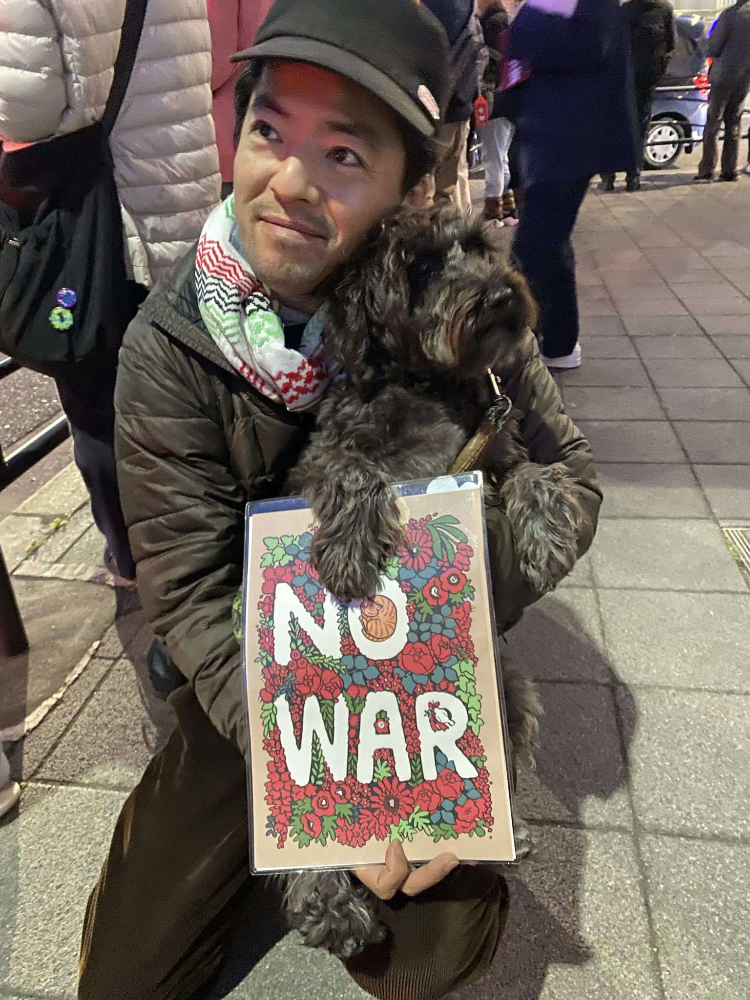
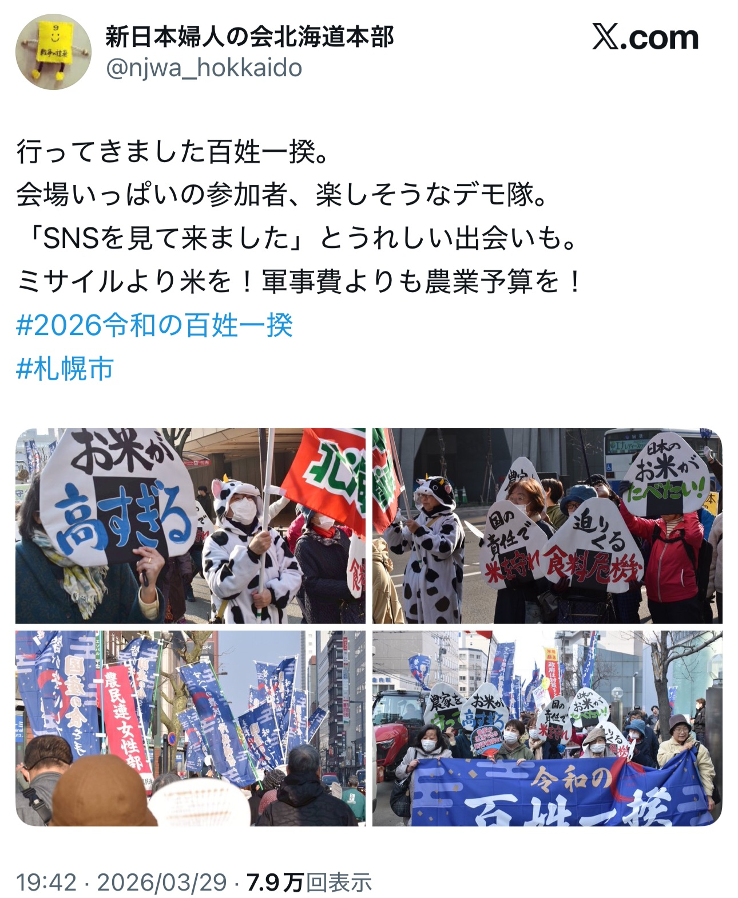
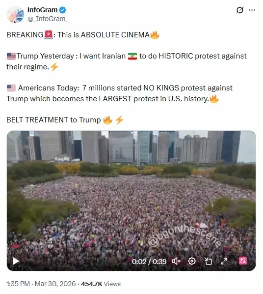
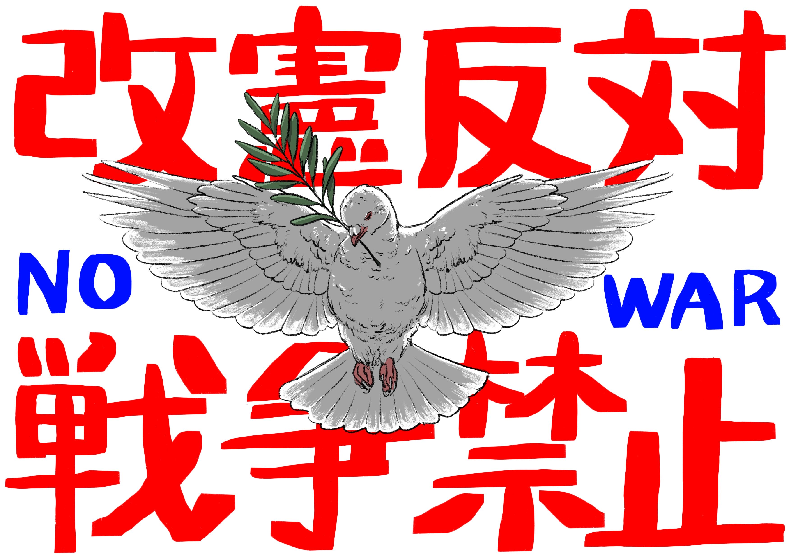
憲法改正・スパイ防止法・高市政権・石油危機の詳細はこちら
⚠️ 問題点を詳しく見る →